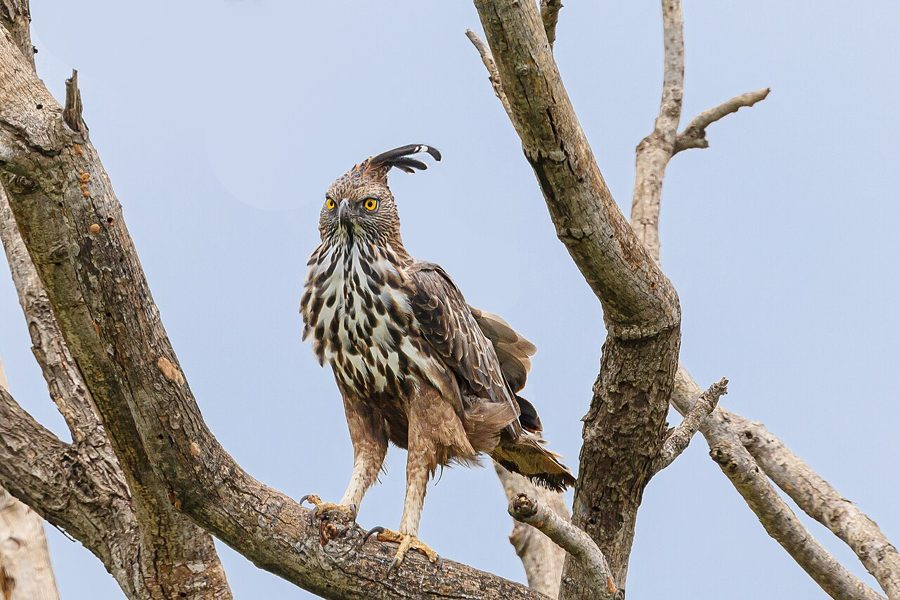

शाह बाज़Changeable Hawk-Eagle
Nisaetus cirrhatus · Accipitridae · BRD-0282

- Scientific name वैज्ञानिक नाम
- Nisaetus cirrhatus (Gmelin, 1788)
- Family कुल
- Accipitridae
- Hindi हिंदी
- शाह बाज़ / चेंजेबल हॉक-ईगल
- Local names स्थानीय नाम
- changeable hawk eagle, shah baz, shahbaz
- Status here यहाँ की स्थिति
- native
- Movement आवागमन
- Resident, here all year
- Known from कहाँ दर्ज
- Others have published records from the Basti–Ayodhya districts बस्ती–अयोध्या के ज़िलों से दूसरों के प्रकाशित अभिलेख
- IUCN IUCN
- LC
- Review समीक्षा
- not yet reviewed
When to look कब देखें
Present all year. साल भर मौजूद।
Tell it apart from इनसे अलग पहचानें
शाह बाज़ / Changeable Hawk-Eagle
Nisaetus cirrhatus (Gmelin, 1788) — Accipitridae
शाह बाज़ — अवध के जंगलों, बागों और नदी किनारे के पुराने पेड़ों पर बैठने वाला एक साहसी शिकारी बाज, जिसके सिर पर लंबी कलगी होती है और जो डालियों के बीच छिपकर कबूतरों, तीतरों और गिलहरियों पर अचानक झपटता है।
Quick Identification त्वरित पहचान
| Feature | Description |
|---|---|
| Crest structure | Prominent, slender erectile black crest projecting from rear of crown |
| Polymorphism | Highly dimorphic plumage with common pale morph and rare uniform dark morph |
| Pale morph pattern | Dark brown above; white breast boldly streaked with black; barred belly and thighs |
| Dark morph pattern | Uniform dark chocolate-brown or sooty-black plumage with paler tail bands |
| Tarsal feathering | Slender, fully feathered tarsi extending completely to base of strong yellow toes |
Medium-sized to large forest eagle recognized by its upright posture in dense tree canopy, long erectile black crest, and fully feathered legs. The typical pale morph displays a brown mantle, white underparts streaked with black, and a white throat with a bold black central mesial stripe and lateral moustachial lines.
हिंदी: मध्यम से बड़े आकार का शिकारी बाज जिसके सिर के पीछे पतली काली कलगी होती है। इसके पैर परों से ढके होते हैं। यह पेड़ों की शाखाओं पर सीधा बैठकर शिकार की ताक में रहता है।
Morphology आकारिकी
| Measurement | Value | Source |
|---|---|---|
| Male wing | 405–430 mm | Baker (1928) as Spizaetus cirrhatus |
| Tail | 280–290 mm | Baker (1928) as Spizaetus cirrhatus |
| Tarsus | 102–110 mm | Baker (1928) as Spizaetus cirrhatus |
| Culmen | 37–40 mm | Baker (1928) as Spizaetus cirrhatus |
The head bears an elongated crest of black feathers with narrow rufous margins. Upperparts are umber-brown with deeper feather centres and paler edges. The quills are dark brown with broad lighter bars. The chin and throat are white, heavily streaked with black to form a defined median line and two border lines. The breast is white with broad chocolate-brown streaks, while the posterior flanks and thighs are barred with rufous-brown and white. The tail is grey-brown, crossed by a broad dark subterminal band and narrower irregular bars. The bill is dark slaty-black with a greenish-yellow cere; the iris is bright yellow, and the feet are dull yellow with long, curved black talons. Females are larger than males.
Vocalisations. A loud, piercing, ringing whistle rendered by field ornithologists as klip-klee-kleep, uttered from high perches or in aerial circling over forest canopy.
हिंदी: इसके पंख मजबूत और पूंछ लंबी होती है (Baker 1928 as Spizaetus cirrhatus)। आंखें चमकीली पीली और चोंच काली होती है। सिर पर 4 से 6 इंच लंबी कलगी होती है।
Behaviour & Ecology व्यवहार और पारिस्थितिकी
A quintessential ambush predator adapted to wooded environments. It spends hours sitting motionless and erect on an upright branch concealed within the leafy mid-canopy of a mature tree, scanning the ground and surrounding branches. When potential prey moves within range, it launches forward in a rapid, silent gliding descent, striking with lethal talons before the quarry can reach shelter. Pairs maintain established home ranges across woodland and orchard matrices, performing aerial undulating territorial displays during the pre-breeding period.
हिंदी: यह घने पेड़ों की पत्तियों में छिपकर शांत बैठता है और नीचे जमीन या डालियों पर नजर रखता है। जैसे ही कोई शिकार दिखता है, यह अचानक बिना आवाज किए तेजी से झपट पड़ता है।
Life Cycle जीवन चक्र
Breeding takes place primarily during the late winter and spring months across northern India. Nest construction begins in December or January, with pairs constructing a large platform of sticks and twigs high up in the primary fork of a massive tree, frequently selecting mature mango trees, banyans, or sal trees. The interior nest depression is carefully lined with fresh green leaves that are replenished throughout incubation. The female lays a single egg that is incubated for several weeks, with both parents bringing fresh quarry to provision the growing chick until it fledges before the monsoon.
हिंदी: प्रजनन सर्दियों के अंत से बसंत में होता है। यह आम या बरगद के विशाल पुराने पेड़ों की ऊंची डालियों पर टहनियों का बड़ा घोंसला बनाता है और उसमें हरी पत्तियां बिछाता है। मादा एक अंडा देती है जिसकी दोनों मिलकर देखभाल करते हैं।
Host Plants or Prey आहार
Opportunistic carnivore taking a wide variety of arboreal and terrestrial prey. Its diet includes medium-sized birds such as grey francolins, laughing doves, spotted doves, and parakeets. Mammalian prey comprises palm squirrels, field mice, and young hares. It also preys upon large agamid lizards (calotes) and garden snakes foraging along forest clearings and orchard edges.
हिंदी: इसका मुख्य भोजन कबूतर, फाख्ता, गिलहरी, चूहे और गिरगिट हैं। यह बगीचों और जंगलों के किनारों पर दिखने वाले छोटे जीवों का तेजी से शिकार करता है।
Predators / Natural Enemies शत्रु
Adults occupy an apex position in local woodland food chains and have no direct predators. Nestlings and eggs may occasionally be vulnerable to large arboreal predators such as the common palm civet or large monitors if adults are lured away from the nest. Crows, drongos, and treepies vigorously mob perched individuals.
हिंदी: वयस्क शाह बाज का कोई प्राकृतिक शिकारी नहीं होता। कौवे और कोतवाल (ड्रोंगो) मिलकर इसे परेशान करते हैं और अपने क्षेत्र से भगाने की कोशिश करते हैं।
Agricultural / Human Relevance कृषि प्रासंगिकता
Protected under the Wildlife (Protection) Act 1972. It provides beneficial rodent and granivorous bird suppression in fruit orchards and agricultural plots bordering forested tracts. Highly admired in historic falconry traditions as the "Shah Baz" (King of Hawks) for its courage and power, it is today an indicator species of mature tree canopy health across the Gangetic plain.
हिंदी: वन्यजीव (संरक्षण) अधिनियम 1972 के तहत संरक्षित। यह आम के बगीचों और खेतों में फसलों को नुकसान पहुंचाने वाले चूहों और गिलहरियों को नियंत्रित करता है। इसे नुकसान पहुंचाना दंडनीय है।
Expected Locally स्थानीय रूप से अपेक्षित
Not a field record. Written from published accounts for eastern Uttar Pradesh. No confirmed local sighting yet — if you have seen it, that is what the atlas needs.
अभी तक स्थानीय पुष्टि नहीं। यह विवरण प्रकाशित स्रोतों से है, किसी अवलोकन से नहीं।
GBIF holds published records from these districts. It is expected in mature mango topes, sal forest patches, and riparian tree belts across Ayodhya, Basti, and Gonda districts. A confirmed local record requires a clear photograph displaying the upright crest, streaked breast, and feathered tarsi alongside date and habitat coordinates.
हिंदी: यह पुराने आम के बागों और जंगल के टुकड़ों में संभावित है। पुष्टि के लिए सिर की कलगी, धारीदार छाती और परों से ढके पैरों को दर्शाती तस्वीर आवश्यक है।
Distribution वितरण
Global range: Native to South and Southeast Asia, ranging from India, Sri Lanka, and Nepal through Myanmar to Indonesia and the Philippines.
In India: Distributed across the Himalayan foothills, northern plains, central highlands, Western Ghats, and Eastern Ghats.
In Uttar Pradesh: Occurs in low density across forested river belts, the Terai tract, and mature rural orchard woodlands.
In Basti district / eastern UP: Expected as a resident breeder in mature woodland pockets and historical mango groves.
हिंदी: यह भारत, नेपाल, श्रीलंका और दक्षिण-पूर्व एशिया में पाया जाता है। उत्तर प्रदेश में यह तराई और पुराने बागों वाले क्षेत्रों में मिलता है।
Research Questions शोध प्रश्न
- What tree species and canopy height parameters are prioritized for nest placement by Nisaetus cirrhatus in rural Awadh?
- How does the fragmentation of mature mango orchards affect the foraging home range of breeding pairs?
- What is the frequency of the melanistic (dark) morph relative to the pale morph across northern Indian populations?
- How do human harvest activities during the spring mango season influence raptor nest abandonment rates?
- क्या पुराने आम के बागों के कटने से शाह बाज के रहने और घोंसले बनाने की जगहें खत्म हो रही हैं?
- क्या इस क्षेत्र में काले रंग का शाह बाज भी देखा जाता है या केवल हल्के रंग का?
Similar Species मिलती-जुलती प्रजातियाँ
| Species | How to tell apart | हिंदी | |
|---|---|---|---|
| Crested Serpent Eagle \ | Spilornis cheela | Broad fan-like bushy crest; bare yellow face skin; broad white band across wings and tail | सर्पेंट ईगल के सिर पर चौड़ी गोल कलगी और आंखों के पास पीली नंगी त्वचा होती है |
| Oriental Honey Buzzard \ | Pernis ptilorhynchus | Small pigeon-like head; bare scaly yellow tarsi lacking plumage; distinctive tail barring | हनी बज़ार्ड का सिर कबूतर जैसा छोटा होता है और उसके पैरों पर पर नहीं होते |
| Booted Eagle \ | Hieraaetus pennatus | Noticeably smaller size; lacks prominent crest; pale landing patches on shoulder leading edges | बूटेड ईगल आकार में छोटा होता है और उसके सिर पर लंबी कलगी नहीं होती |
Field rule: Woodland eagle with upright posture, long slender black crest, streaked breast, and densely feathered tarsi down to toes.
हिंदी: सिर पर लंबी पतली काली कलगी, धारीदार छाती और पंजे तक परों से ढके पैरों वाला जंगली शिकारी बाज।
Taxonomy & Classification वर्गीकरण
Original description. Gmelin (1788), Systema Naturae, 13th ed., vol. 1, p. 274; type locality: India.
Subspecies. Polytypic species; northern Indian populations represent the nominate crested form Nisaetus cirrhatus cirrhatus.
Family and order placement. Belongs to the family Accipitridae, order Accipitriformes, class Aves.
Phylogenetic notes. Formerly classified under Spizaetus (Baker 1928 treats it as Spizaetus cirrhatus); modern genetic analyses segregate the Asian hawk-eagles into the resurrected genus Nisaetus.
IUCN status rationale. Evaluated as Least Concern (LC) globally by IUCN (2021) due to its vast geographical range.
हिंदी: इसका पहला वैज्ञानिक विवरण 1788 में ग्मेलिन ने दिया था। पहले इसे Spizaetus में रखा गया था, अब यह Nisaetus में है और वैश्विक स्तर पर कम चिंताजनक है।
Photo Gallery फोटो गैलरी
No photos yet — add field photos to media/species/changeable_hawk_eagle/ and run node scripts/sync_photos.js.
Photos needed आवश्यक फोटो
- [ ] Perched adult showing prominent long crest and upright profile in canopy (पेड़ पर सीधा बैठा हुआ वयस्क बाज जिसकी कलगी साफ दिखे)
- [ ] Soaring bird viewed from below showing broad rounded wings and barred tail (उड़ते हुए पक्षी के फैले पंखों और धारीदार पूंछ का दृश्य)
- [ ] Close-up of feathered tarsi and yellow talons on tree branch (डाल पर बैठे बाज के परों से ढके पैरों और पंजों का क्लोज-अप दृश्य)
- [ ] Pale morph individual displaying bold black throat stripe and breast streaks (सफेद छाती और गले पर काली लकीर दर्शाने वाला पक्षी)
- [ ] Massive stick nest platform high in a mature mango or sal tree (पुराने आम या साखू के पेड़ पर बना बड़ा टहनियों का घोंसला)
- [ ] Juvenile bird showing paler crown and reduced breast markings (हल्के रंग के सिर और कम धारियों वाले युवा पक्षी का दृश्य)
References संदर्भ
- Original description: Gmelin, 1788 — see GBIF.
- Baker, E. C. S. (1928). The Fauna of British India, Including Ceylon and Burma: Birds. 2nd ed., Vol. 5. Taylor & Francis, London. (as Spizaetus cirrhatus).
- Ali, S. & Ripley, S. D. (1983). Handbook of the Birds of India and Pakistan. Compact ed. Oxford University Press, New Delhi.
- Grimmett, R., Inskipp, C. & Inskipp, T. (2011). Birds of the Indian Subcontinent. 2nd ed. Christopher Helm, London.
- Rasmussen, P. C. & Anderton, J. C. (2012). Birds of South Asia: The Ripley Guide. Vols. 1–2. 2nd ed. Smithsonian Institution and Lynx Edicions.
- IUCN Red List of Threatened Species: Nisaetus cirrhatus, 2021.
- GBIF Occurrence Data — Nisaetus cirrhatus, India (2025).
Source file: species/fauna/birds/changeable_hawk_eagle.md